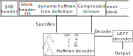

Parallel decompression of
gzip files
Maël Kerbiriou @ BONSAI
Lille, France
Rayan Chikhi @ CNRS & Institut Pasteur
GZIP
History at a glance
gzip is an utility and file format for lossless compression using the LZ77 and Huffman coding
- LZ77 (Abraham Lempel and Jacob Ziv, 1977) encode repetitions in the stream
- Huffman coding (1952) assign a code of optimal length for each symbol
- DEFLATE format: first used in
PKZIP(1989), combines the above technology - gzip (v0.1 in 1992) : GNU implementation of DEFLATE with it's own file container format
GZIP
format
gzip usage in bioinformatics
- Text file format are frequent in bioinformatics
- gzip is a natural choice for generic compression of text file:
- ASCII only: immediate 7/8bits space reduction
- FASTA: 4 symbols, short repetitions in DNA
- VCF,BED,...: digits/sperators, repeated fields
- It is not best in class in either compression/decompression nor compression ratio
See eg. brotli or Zstd https://quixdb.github.io/squash-benchmark - However, gzip is ubiquitous and fast (In particular,
gzip -1is 7x faster than the default)
Default compression format inbcl2fastq - ⇒
.fq.gzformat is here to stay, at least as an interchange format.
GZIP
When is decompression a bottleneck?
- Some routine data processing are not intrinsically CPU-heavy tasks
- Most of CPU time is spent on decompressing input gzip files
- If CPU intensive, the compute task is generally parallelizable
⇒ decompression will again be the bottleneck - IO bottlenecks are not a problem with the current generation of NAS and NVMe drives
Gzip: a sequential bottleneck
Moore's law is dead, clock frequencies and IPC are stagnating ⇒ need multi-core parallelism

credits: Wikimedia
⇒ gzip decompression can or will be a sequential bottleneck
Parallelism in gzip
![[picture of a pig]](figures/pigz.png)
Pigz: parallel compression but sequential decompression
Gzip random access
Needed for parallelization, allows to dispatch chunks to threads.
But gzip format does not make things easy for us.
Gzip random access
LZ77 sliding window
- In a gzip stream the window is never reset: through transitivity, the end of the stream might reference some characters at the begining
- We cannot seek in the stream if we don't know the previous 32KiB
Gzip random access
Adaptative Huffman code
- The deflate stream is segmented into blocks, each with a different huffman tree
- No block length field in block headers
- A prefix code streams is not byte aligned, nor are the block limits

Gzip random access
We propose:
- A way to guess block position, in order to deserialize the current huffman tree
- Two methods to deal with the unknown 32KiB context
Syncing to the start of a block
Brute force approach: try every bit position until one yield an acceptable result
Rewind and try next bit position in case of:
- Invalid block headers or Huffman trees
- Unknown Huffman symbols
- Non ASCII litterals
Decompressing with an unknown context
Fill the windows with dummy character and advance the de coding untill none remains.

Decompressing with an unknown context
Fill the windows with dummy character and advance the de coding untill none remains.

Decompressing with an unknown context
Perspective: use FASTQ specifics heuristics to extract sequence even in the presence of unknown symbols
Decompressing with an unknown context
Second approach: fill the windows with unique symbols

Decompressing with an unknown context
Second approach: fill the windows with unique symbols, then do a second pass substituting those symbols with the context once it is known (pugz)
Performance
Conclusion
- It's possible to get speedups by parallelizing gzip !
~5x faster than libdeflate with 12 threads. There is room for improvement. - Limited to ASCII files, but can be extend for binary.
- Some alternatives exist like blocked gzip.
bcl2fastquses it.
⇒ 50% file in the Short Read Archive are in bgzf.